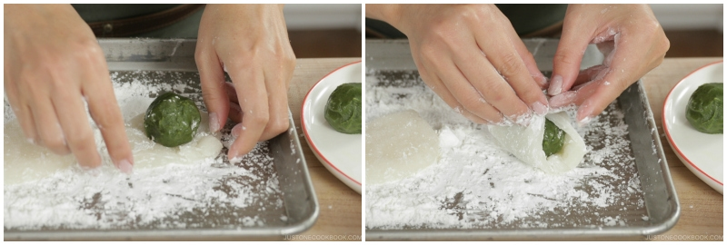

1
White mochi with Matcha fillings
- In a bowl, combine 50 g Shiratamako and 25 g sugar and whisk well
- Add 90 g water and whisk well until there is no lump
- Cover the bowl with a paper towel and microwave for 1 minute
- Wet your silicone spatula with water. Mix the mochi dough so that it will be cooked evenly
- Cover and microwave for an additional 30 seconds. The cooked mochi dough should look opaque
- Spread the potato starch or corn starch well on a baking sheet. Put mochi dough on top of the starch
- Sprinkle potato starch on top of the mochi dough and on your hands
- Use a dough scraper, divide the mochi dough into equal thirds. Flatten the dough into a circle shape
- Place the matcha paste ball in the center of the dough. Bring all four corners of the dough over the ball
- Bring the rest of the edges to the top. Pinch the seam line by pulling the mochi dough
- Once the seam is tightly closed, flip the mochi so the seam line is on the bottom. Twist the mochi a few times on your palm to reshape until even thickness
- Repeat the same for the next 2 mochi dough.

2
Matcha mochi with cream fillings
- In a bowl, combine 50 g Shiratamako and 25 g sugar and whisk well
- Add 2 g matcha into the mixture and whisk well
- Add 90 g water and whisk well until there is no lump
- Cover the bowl with a paper towel, microwave for 1 minute
- Wet your silicone spatula with water. Mix the mochi dough so that it will be cooked evenly
- Cover and microwave for an additional 30 seconds. The cooked mochi dough should look opaque
- Spread the potato starch or corn starch well on a baking sheet. Put mochi dough on top of the starch
- Sprinkle potato starch on top of the mochi dough and on your hands
- Use a dough scraper, divide the mochi dough into equal thirds. Flatten the dough into a circle shape
- Place the white bean paste ball in the center of the dough. Bring all four corners of the dough over the ball
- Bring the rest of the edges to the top. Pinch the seam line by pulling the mochi dough
- Once the seam is tightly closed, flip the mochi so the seam line is on the bottom. Twist the mochi a few times on your palm to reshape until even thickness
- Repeat the same for the next 2 mochi dough.